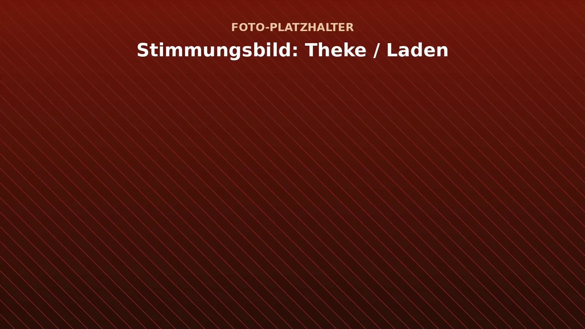
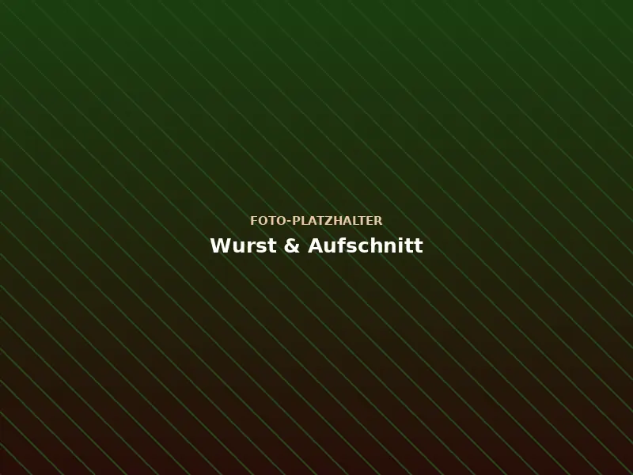
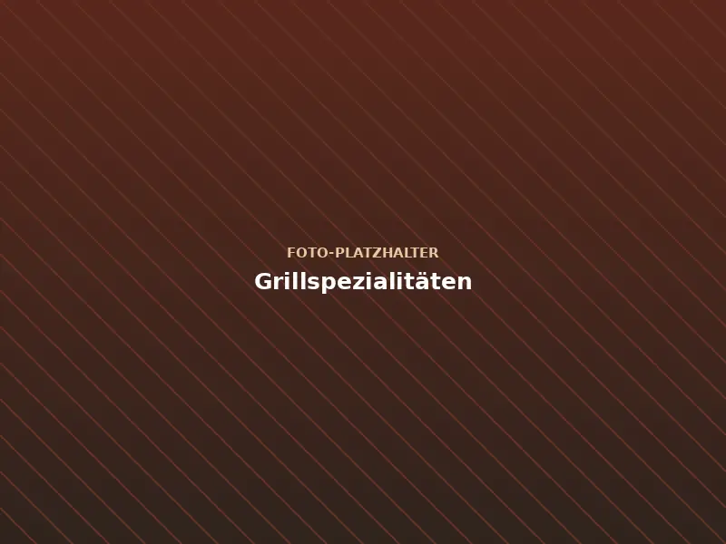
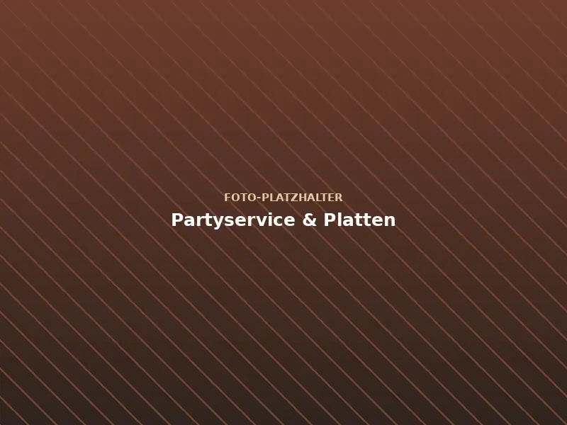
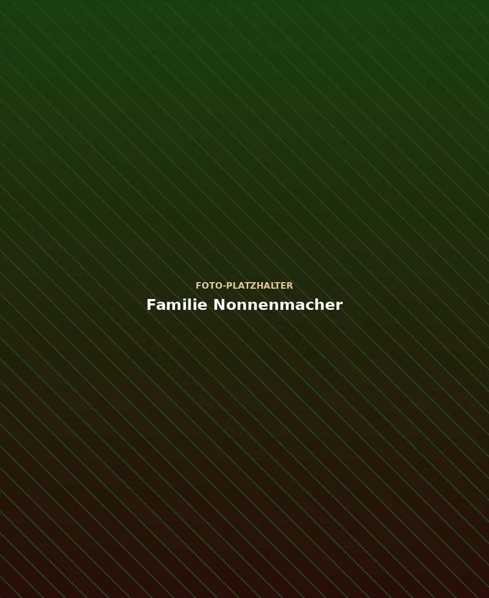

Familie Nonnenmacher · Bergatreute
Immer … fein frisch und günstig!
Fleisch und Wurst von Ihrer Landmetzgerei – mit Handwerk und Sorgfalt gemacht.
Aktuelles
Unser Sortiment
Aus unserer Metzgerei
[Platzhalter: Ein Satz zum Sortiment, z. B. woher das Fleisch kommt und was Sie selbst herstellen.]
-
Frischfleisch
[Platzhalter: z. B. Rind, Schwein, Kalb – Beschreibung anpassen.]
-

Wurst & Aufschnitt
[Platzhalter: Beschreibung der Wurstspezialitäten anpassen.]
-

Grillspezialitäten
[Platzhalter: Beschreibung der Grillprodukte anpassen.]
-
-

Vorbestellung
Bestellen Sie vor – wir legen's bereit
Abholung donnerstags, freitags oder samstags im Laden. Lieber persönlich? Rufen Sie uns an: (0 75 27) 15 40.

Über uns
Familie Nonnenmacher
[Platzhalter: Wer steht hinter der Landmetzgerei? Seit wann gibt es den Betrieb, in welcher Generation wird er geführt?]
-
Familienbetrieb
[Platzhalter: Ein bis zwei Sätze zur Familie und zum Team.]
-
Handwerk
[Platzhalter: Was machen Sie selbst – Wurst nach eigenen Rezepten, Schlachtung, Räuchern …?]
-
Regionalität
[Platzhalter: Woher kommen die Tiere? Mit welchen Höfen aus der Region arbeiten Sie?]
Öffnungszeiten
Wann wir für Sie da sind
| Montag | geschlossen |
|---|---|
| Dienstag | geschlossen |
| Mittwoch | geschlossen |
| Donnerstag | 8:00 – 18:00 Uhr |
| Freitag | 8:00 – 18:00 Uhr |
| Samstag | 8:00 – 13:00 Uhr |
| Sonntag | geschlossen |
Anfahrt
So finden Sie uns
Landmetzgerei NonnenmacherKeltenstr. 5
88368 Bergatreute Route planen
Karte anzeigen?
Beim Laden der Karte werden Daten (u. a. Ihre IP-Adresse) an Google übertragen. Mehr dazu in unserer Datenschutzerklärung.
Kontakt
Wir freuen uns auf Sie
- Telefon (0 75 27) 15 40
- E-Mail service@landmetzgerei-nonnenmacher.de
- Fax (0 75 27) 91 48 96
- Adresse Keltenstr. 5, 88368 Bergatreute